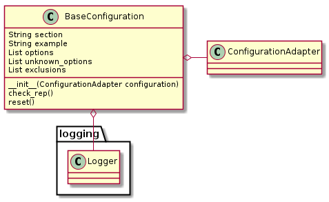

The purpose of this class is to enforce some expected attributes and to provide an unknown_options method to children. Additionally, children will get a logger (assuming they initialize this parent class).

BaseConfiguration(configuration) |
An abstract base class for configurations |
BaseConfiguration.section |
The Section name ([SECTION]) to get from the configuration |
BaseConfiguration.options |
A list of known options for the relevant section in the configuration |
BaseConfiguration.example |
An example configuration |
BaseConfiguration.unknown_options |
A list of options in the section that aren’t recognized |
BaseConfiguration.exclusions |
A list of attributes that aren’t options in the configuration |
BaseConfiguration.check_rep() |
Checks the values for validity |
BaseConfiguration.reset() |
Sets the values (attributes) to None |